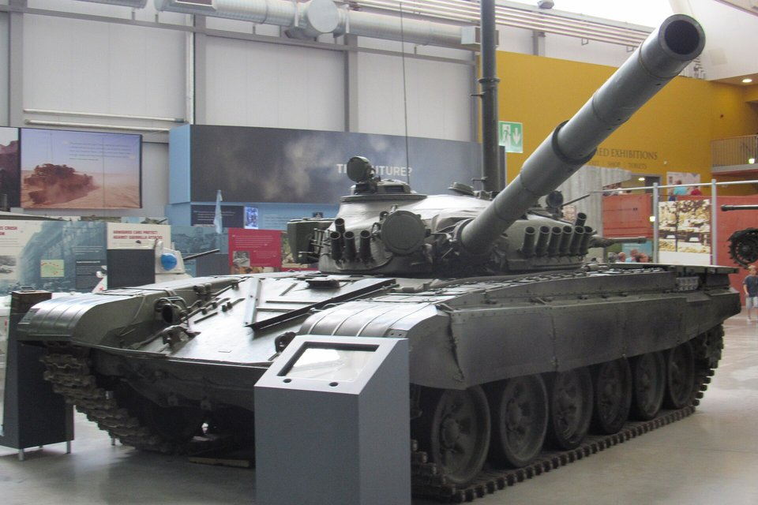

Jorge Puente García
Buscar
English
Jorge Puente García
Buscar
English
Sitio personal · Jorge Puente García
Tanques, aviones y museos.
Me gustan los tanques y los aviones de combate. He visitado pocos museos, pero sigo sus colecciones y disfruto descubriendo vehículos en películas y videojuegos. En War Thunder juego con un enfoque de coleccionismo: me atrae el detalle con el que representa y explica tanques y aviones.

Explora mis intereses
Sobre mí y mi formación · Vehículos y museos · Vídeo y podcast · Series y películas · Videojuegos